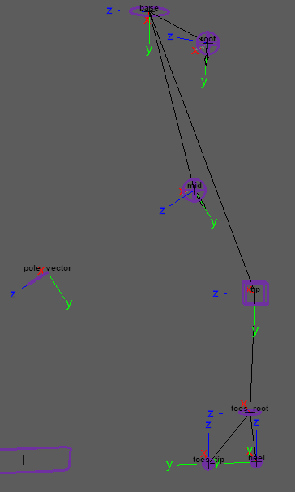
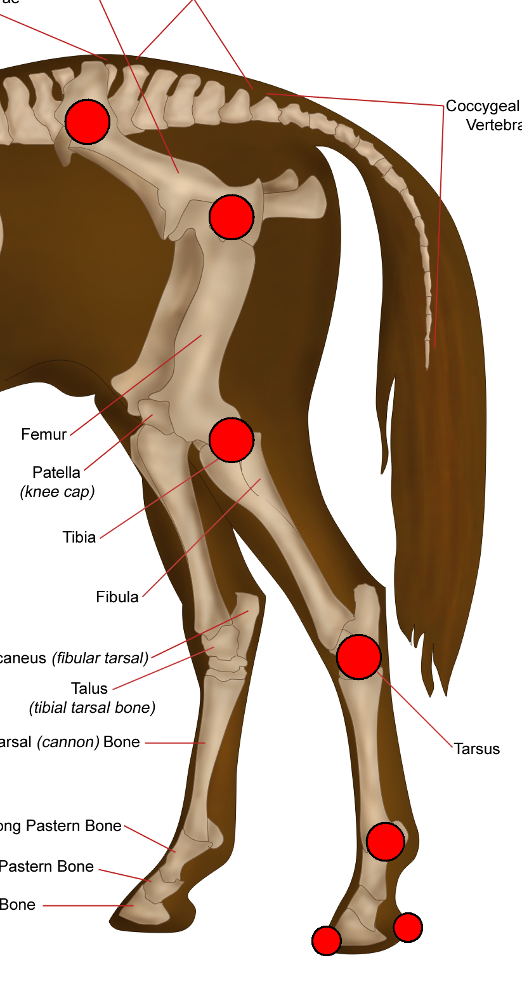

Creates the back leg of a 4-legged animal (quadruped). Features include IK/FK, ribbon, twist,
soft IK, stretch, pin ctrl, etc.
Guides:

Attributes:
- 'Ctrls Scale' - Scale all the node ctrls. Note
that the attachments 'Ctrls
Settings' and 'CtrlsShape' will
override this. [Video]
- 'Clean Transformations' - If checked,
the zeroed pose will be
the same as the bind pose; if unchecked, when zeroing
the ctrls, they will align with a world axis specified in the following two
attributes. [Video]
- 'World Orientation' - The world axis the ctrls
will align with when zeroed. Usually, this attribute's default value is the correct
value. [Video]
- 'World Orient Twist' - Along with 'World
Orientation', defines the ctrls zeroed pose. Usually, the default value of 0 is the correct
value. [Video]
- 'Expose RotateOrder' - Exposes all the ctrls
'RotateOrder' attribute in the Channel Box. [Video]
- 'Secondary Ctrls' - Secondary ctrls are added
under some ctrls to help prevent gimbal lock.
A visibility attribute is added to the parent
ctrl. [Video]
- 'Ik Fk Switch' - Select where the 'Ik Fk
Switch' attribute and other shared attributes are placed: [Video]
- 'switch_ctrl' - Places them on a ctrl that follows the leg tip
(default).
- 'proxy_attrs' - places them as shared attributes (proxy attributes), on both
the IK tip ctrl and the FK tip ctrl.
- 'Switch Ctrl Offset' - Position offset of
'switch_ctrl' from the 'tip_jnt'.
- 'Volume' - Adds 'Auto Volume' and 'Manual
Volume' attributes.
- 'Pin Ctrl' - Add a 'pin_ctrl'
that constrains 'mid_ctrl' when activated. To activate this ctrl
use the 'Pin' attribute on 'mid_ctrl'.
Use a 'SpaceSwitch' attachment for 'pin_ctrl' to
properly use this feature.
- 'Mirror Behaviour' -Only affects
mirrored nodes.
- Unchecked - The IK ctrls of mirrored nodes will align with the
world, meaning that both legs will move and rotate in the same direction (default for
legs).
- Checked - The IK ctrls of mirrored nodes will mirror orientations,
meaning that both legs will reflect each other (default for arms).
- 'IK Twist' - The attribute 'Twist' is added to 'ik_tip_ctrl', giving you another control over the IK chain
twist.
- 'Stretch' - The attributes 'Auto Stretch' and
'Manual Stretch' are added to 'ik_tip_ctrl' for control over the leg
length.
- 'Toggle Pole Vector' - The attribute
'Toggle Pole Vector' is added to 'ik_tip_ctrl', which can turn off the
pole vector constraint.
- 'Soft IK' - The attribute 'Soft
Ik' is added to 'ik_tip_ctrl', which helps fix the 'pop' in the animation when the IK chain
gets fully extended.
- 'Ctrls Translate' - If checked, animators will also be
able to translate the FK ctrls.
- 'Ribbon Joints' - How many skinning
joints each ribbon will have (total x2; upper ribbon and lower ribbon). [Video]
- 'Ribbon Twist' - Allow the ribbon joints to twist. Turn this
off for creatures with external skeletons, such as spiders, or for characters wearing rigid
armor.
- 'Ribbon Micro
Ctrls' - Add a ctrl for every ribbon skinning
joint. [Video]
- 'Bezier Ctrls' - Adds ctrls that
deform the ribbon like a Bezier curve. [Video]
- 'Bezier Ctrls Offset' - Position offset of the Bezier ctrls
from the joint chain.
Connections:
- 'Root Input' - Drives the ctrls of this node except the 'ik_tip_ctrl'
and the 'ik_pv_ctrl'. Usually driven by the spine node.
- 'IK Tip Input' - Drives the 'ik_tip_ctrl' and the
'ik_pv_ctrl'. Separate from 'Root Input' because we often want the IK ctrls to move with
the 'Base' node.
- 'Root Output' - An output at the 'root_jnt'
(pelvis).
- 'Ankle Output' - An output at the
'tip_jnt'.
- 'Toes Tip Output' - An output at the
'toes_tip_root_jnt'.
_____________________________________________
Get Arise at: https://www.ariserigging.com